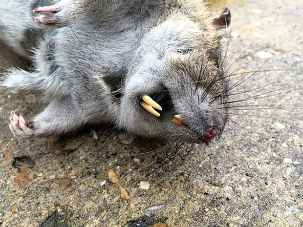

Se antes eram visitantes noturnos, hoje os ratos no Bairro Tropical têm aparecido frequentemente de manhã,
horário em que são vistos pelos moradores.
Os roedores são vistos saindo de bueiros e vasculhando o lixo pelo bairro, mas aparecem principalmente na
Avenida Durval Alves, onde existe um maior fluxo de pessoas e, consequentemente, mais comida para os animais.
Como se não bastasse a poluição visual, os ratos de rua invadem a casa de muitos moradores em busca de comida e
atraídos pela ração de outros animais. Os habitantes se encontram em uma situação difícil, e reclamam da precariedade
do sistema de vigilância sanitária:
"Normalmente nós não tínhamos esse monte de ratos andando pelas ruas. Hoje em dia você vê os ratos brigando
com os cachorros pelo lixo. É algo inimaginável, mas que nos incomoda muito", diz dona Sueli, moradora do bairro.
"Nem dá pra acreditar que chegamos a esse ponto! Já reclamamos com a prefeitura, mas até agora nada! Os ratos além de
roubarem o nosso lixo ainda entram dentro de casa e roubam a ração dos gatos e cachorros. Meus custos têm aumentado muito mais,
sem contar que passei a amarrar o lixo em duas sacolas, mas mesmo assim os danados roem a sacola e esparrodam o lixo.",diz Manoel,
morador da avenida Durval Alves.

Muitos ratos estão sendo encontrados mortos nas ruas. Os moradores dizem que cansaram de esperar a prefeitura tomar providência,
então decidiram fazer justiça com as próprias mãos, colocando venenos para ratos, como chumbinho, ratac e outros. Infelizmente,
outros animais ingerem essas substâncias e acabam morrendo, como é o caso do gato da Dona Marceli. "O Devi nunca sai comigo em casa.
Ele sempre me espera e vem quando eu chamo. Ontem eu o chamei, mas ele não veio. Saí para procurá-lo e o encontrei morto no chão da esquina.
Quem faz esse tipo de coisa não pensa nos outros, todos estamos com problemas, mas não podemos resolver dessa forma", afirma Dona Marceli.
Quando informada da atitude dos moradores, a prefeitura logo notificou-os e se dispôs a cuidar dos problemas causados pelos ratos.
O prefeito também afirmou que a Vigilância Sanitária já foi chamada e a inspeção e limpeza das ruas ocorrerá na próxima semana, combatendo os ratos
com métodos legais e que não coloquem a população e os outros animais em risco.